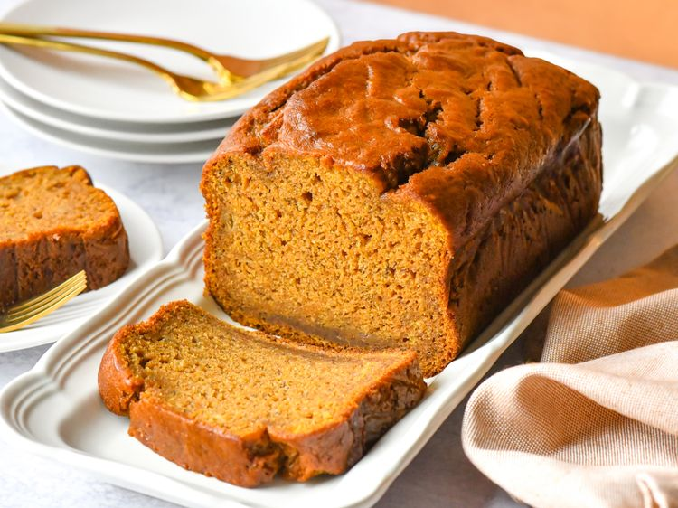

Pão de banana e abóbora
Home

Pão caseiro
Pão de banana e abóbora caseiro.
Ingredientes
- 1 xícara de banana amassada
- 1 xícara de purê de abóbora
- 1 xícara de açúcar mascavo bem compactado
- 1/2 xícara de azeite de oliva
- 2 ovos grandes, em temperatura ambiente
- 2 colheres de chá de extrato de baunilha
- 1 colher de chá de especiarias para torta de abóbora
- 1 colher de chá de canela em pó
- 1 colher de chá de sal
- 1 colher de chá de suco de limão
- 2 xícaras de farinha de trigo
- 1 colher de chá de bicarbonato de sódio
Passo a passo
- Pré-aqueça o forno a 180°C (350°F). Unte uma forma de pão de 23x13 cm e forre o fundo com papel manteiga.
-
Em uma tigela grande, misture a banana, a abóbora, o açúcar mascavo, o óleo, os ovos, a baunilha, o tempero de torta de abóbora, a canela, o sal e o suco de limão até obter uma mistura homogênea. Adicione a farinha e o bicarbonato de sódio e misture até incorporar completamente, sem grumos de farinha.
- Despeje a massa na forma preparada.
- Asse no forno pré-aquecido até que um palito inserido no centro do pão saia limpo, de 60 a 70 minutos. Deixe o pão esfriar na forma por 15 minutos antes de desenformar sobre uma grade para esfriar completamente.